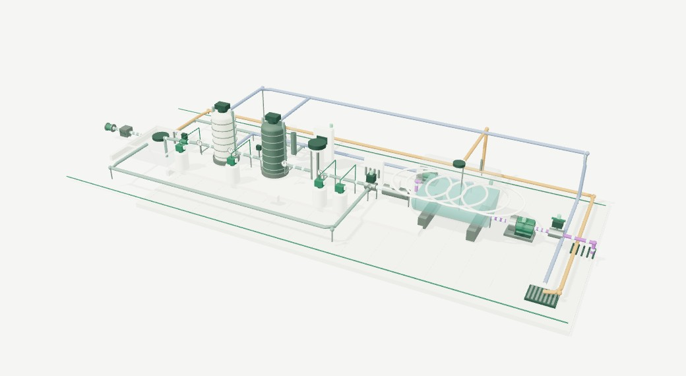
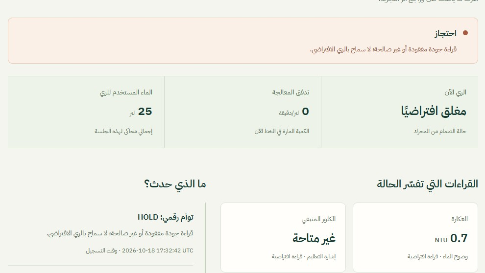

<!doctype html>
<html lang="ar" dir="rtl">
<meta charset="utf-8">
<title>مورد — جولة النموذج البرمجي</title>
<style>
@font-face{font-family:Plex;src:url('../assets/fonts/plex-arabic-400.ttf');font-weight:400}
@font-face{font-family:Plex;src:url('../assets/fonts/plex-arabic-600.ttf');font-weight:600}
@font-face{font-family:Plex;src:url('../assets/fonts/plex-arabic-700.ttf');font-weight:700}
@font-face{font-family:Manrope;src:url('../assets/fonts/manrope-700.ttf');font-weight:700}
*{box-sizing:border-box}html,body{width:1280px;height:720px;margin:0;overflow:hidden;background:#f7faf6;color:#123e35;font-family:Plex,sans-serif}main{position:relative;width:1280px;height:720px;overflow:hidden}.hidden{display:none!important}.chrome{position:absolute;inset:0;pointer-events:none}.brand{position:absolute;right:48px;top:32px;width:128px;height:60px;object-fit:contain}.top-note{position:absolute;left:48px;top:44px;color:#4d6156;font-size:19px;display:flex;align-items:center;gap:10px}.dot{width:8px;height:8px;background:#39786a;border-radius:99px}.line{position:absolute;top:112px;left:48px;right:48px;border-bottom:1px solid #d1e0d5}.footer{position:absolute;left:48px;right:48px;bottom:25px;display:flex;justify-content:space-between;align-items:center;font-size:17px;color:#4d6156}.footer b{font-weight:600}.foot-en{font-family:Manrope;font-size:12px;letter-spacing:2px}.progress{position:absolute;bottom:0;right:0;height:5px;background:#39786a}.shot{position:absolute;inset:0}.dark{background:#123e35;color:#f7faf6}.dark .top-note,.dark .footer{color:#b4cfba}.dark .line{border-color:#39786a}.copy{position:absolute;right:48px;width:320px;top:182px}.eyebrow{font-size:18px;letter-spacing:.2px;color:#39786a;margin-bottom:20px;font-weight:600}.dark .eyebrow{color:#b4cfba}h1,h2,p{margin:0}h1{font-weight:700;font-size:64px;line-height:1.48;letter-spacing:-1px}h2{font-size:39px;line-height:1.5;font-weight:600}.desc{font-size:24px;line-height:1.75;color:#4d6156;margin-top:22px}.dark .desc{color:#d8e8dd}.small{font-size:19px;line-height:1.7;color:#4d6156}.num{font-family:Manrope;font-size:100px;line-height:1;color:#dbe7dc;font-weight:700;margin-bottom:24px}.media{position:absolute;left:48px;top:154px;width:848px;height:476px;overflow:hidden;border:1px solid #d1e0d5;border-radius:14px;background:#eff3ec}.media img{width:100%;height:100%;object-fit:cover}.tag{font-size:17px;line-height:1.6;border:1px solid #d1e0d5;display:inline-block;padding:6px 12px;border-radius:7px;margin-top:22px;color:#39786a}.intro .copy{width:585px;top:173px}.intro h1{font-size:65px;line-height:1.55}.intro .desc{max-width:560px;font-size:24px}.intro .scene{position:absolute;left:38px;top:205px;width:555px;height:315px;object-fit:cover;object-position:center;border-radius:160px 160px 16px 16px;background:#f7faf6}.intro .caption{position:absolute;left:50px;top:543px;width:530px;text-align:center;color:#b4cfba;font-size:17px}.intro .mark{position:absolute;left:35px;top:180px;width:570px;height:370px;border:1px solid #39786a;border-radius:190px 190px 30px 30px;transform:rotate(-4deg)}.concept{display:flex;gap:11px;align-items:center;flex-wrap:wrap;font-size:19px;margin-top:25px}.concept span{border:1px solid #39786a;border-radius:9px;padding:8px 15px}.concept i{font-style:normal;color:#b4cfba}.kicker{position:absolute;right:48px;top:137px;font-size:18px;color:#39786a}.kicker b{font-family:Manrope;font-size:14px;letter-spacing:2px;padding-right:12px}.media-title{position:absolute;right:18px;top:14px;background:#fffefa;color:#39786a;border:1px solid #d1e0d5;font-size:15px;padding:6px 12px;border-radius:20px}.warning .num{color:#eee1c5}.warning .eyebrow{color:#8d6835}.warning .tag{color:#8d6835;border-color:#dbc39a;background:#fcf7eb}.mini-chain{margin-top:24px;border-right:2px solid #d1e0d5;padding-right:17px;font-size:20px;line-height:2.25}.mini-chain b{font-weight:600}.readings .media img{object-fit:cover;object-position:top}.readings .desc{font-size:23px}.limits .lead{position:absolute;right:48px;top:163px;font-size:45px;line-height:1.5;font-weight:600;width:1150px}.limit-grid{position:absolute;right:48px;left:48px;top:300px;display:grid;grid-template-columns:repeat(3,1fr);gap:22px}.limit-card{min-height:264px;background:#edf3ed;border-top:2px solid #39786a;padding:24px}.limit-card .n{font-family:Manrope;color:#8da996;font-size:42px;font-weight:700;margin-bottom:8px}.limit-card h3{font-size:28px;font-weight:600;margin:0 0 12px;line-height:1.5}.limit-card p{font-size:21px;line-height:1.8;color:#4d6156}.final .copy{width:790px;right:245px;top:175px;text-align:center}.final h1{font-size:72px}.final .desc{margin-top:13px;font-size:27px}.link{font:700 25px Manrope;direction:ltr;letter-spacing:.1px;display:inline-block;border-bottom:1px solid #b4cfba;padding:9px 0;margin-top:22px;color:#e9f3ef}.final .small{color:#b4cfba;margin-top:24px}.pill{display:inline-flex;align-items:center;gap:10px;border:1px solid #b4cfba;border-radius:30px;padding:8px 18px;color:#e9f3ef;font-size:17px}.final .pill{margin-top:22px}.overlay main{background:transparent}.overlay .media{visibility:hidden}
html.overlay,body.overlay,body.overlay main{background:transparent}.overlay .media{visibility:visible;background:transparent;border:0}.overlay .media>img{visibility:hidden}.overlay .media-title{visibility:visible}
</style>
<main id="frame"></main>
<script>
const timeline=[{id:'intro',start:0,end:6},{id:'journey',start:6,end:22},{id:'fault',start:22,end:34},{id:'readings',start:34,end:44},{id:'limits',start:44,end:54},{id:'final',start:54,end:60}];
const logo=(dark)=>``;
const chrome=(dark,section)=>`${logo(dark)}<div class="top-note"><span class="dot"></span>نموذج برمجي · محطة افتراضية</div><div class="line"></div><div class="footer"><b>${section}</b><span class="foot-en">MAWRID / SOFTWARE PROTOTYPE</span></div>`;
const templates={
intro:`<section class="shot dark intro">${chrome(true,'عرض تعريفي للمحكّم · دقيقة واحدة')}<div class="mark"></div><div class="caption">لقطة من النموذج البرمجي · ليست منشأة منفذة</div><div class="copy"><div class="eyebrow">مورد · لا لتر بلا تحقق</div><h1>مياه الوضوء،<br>موردٌ للري.</h1><p class="desc">نموذج برمجي يشرح المحطة المقترحة<br>ويختبر قراراتها في بيئة افتراضية.</p><div class="concept"><span>نفهم الرحلة</span><i>←</i><span>نجرّب العطل</span><i>←</i><span>نراجع القرار</span></div></div></section>`,
journey:`<section class="shot">${chrome(false,'01 / رحلة الماء')}<div class="media" id="media"><span class="media-title">تسجيل فعلي للبرنامج · بيانات محاكاة</span></div><div class="copy"><div class="num">01</div><h2>المحطة،<br>خطوة بخطوة.</h2><p class="desc">من التجميع إلى الترشيح والتخزين، ثم مسار الري.</p><div class="tag">المشهد يعرض حالة المحاكاة.</div></div></section>`,
fault:`<section class="shot warning">${chrome(false,'02 / تجربة عطل افتراضي')}<div class="media" id="media"><span class="media-title">تسجيل فعلي للبرنامج · عطل محاكى</span></div><div class="copy"><div class="num">02</div><h2>ماذا يحدث<br>عند العطل؟</h2><div class="mini-chain">انقطاع قراءة حساس<br><b>← احتجاز</b><br><b>← إغلاق الري الافتراضي</b></div><div class="tag">القرار بقواعد ثابتة في البرنامج.</div></div></section>`,
readings:`<section class="shot readings">${chrome(false,'03 / متابعة القرار ومصدره')}<div class="media" id="media"></div><div class="copy"><div class="num">03</div><h2>قراءة، وقرار،<br>وسجل.</h2><p class="desc">اعرف سبب الحالة، وراجع القراءات والأحداث ومصدر كل سجل.</p><div class="tag">النظام المحلي يحفظ السجل في SQLite.</div></div></section>`,
limits:`<section class="shot limits">${chrome(false,'04 / ما ثبت وما بقي')}<div class="lead">النموذج يعمل برمجيًا.<br>والتحقق الميداني هو الخطوة التالية.</div><div class="limit-grid"><div class="limit-card"><div class="n">01</div><h3>محطة افتراضية</h3><p>لم تُبنَ المحطة المادية<br>ولم تُقَس جودة ماء مورد.</p></div><div class="limit-card"><div class="n">02</div><h3>الذكاء مسار بحثي</h3><p>تجارب على بيانات عامة؛<br>لا تتحكم بقرار الري.</p></div><div class="limit-card"><div class="n">03</div><h3>أدلة قابلة للمراجعة</h3><p>المصدر والاختبارات والنتائج<br>والنسخ السابقة محفوظة.</p></div></div></section>`,
final:`<section class="shot dark final">${chrome(true,'مورد · مياه الوضوء والمغاسل إلى ري المسطحات')}<div class="copy"><div class="eyebrow">افتح الرابط وابدأ الجولة</div><h1>جرّب مورد بنفسك.</h1><p class="desc">شاهد رحلة الماء، ثم جرّب استجابة البرنامج للعطل.</p><div class="link">sultalfaifi.com/mawrid-water-reuse/experience/</div><p class="small">تجربة متصفح محلية · لا تتصل بمحطة أو حساسات حقيقية</p><div class="pill">الشرح والحدود والأدلة في المستودع</div></div></section>`
};
window.renderFrame=(id,{overlay=false,progress=1}={})=>{document.documentElement.classList.toggle('overlay',overlay);document.body.classList.toggle('overlay',overlay);document.getElementById('frame').innerHTML=templates[id]+`<div class="progress" style="width:${progress*100}%"></div>`;};
const q=new URLSearchParams(location.search);window.renderFrame(q.get('shot')||'intro',{overlay:q.has('overlay')});
window.timeline=timeline;
</script>
</html>
